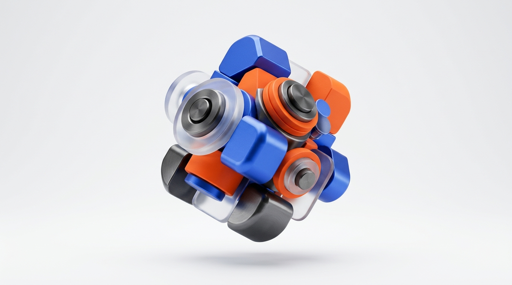
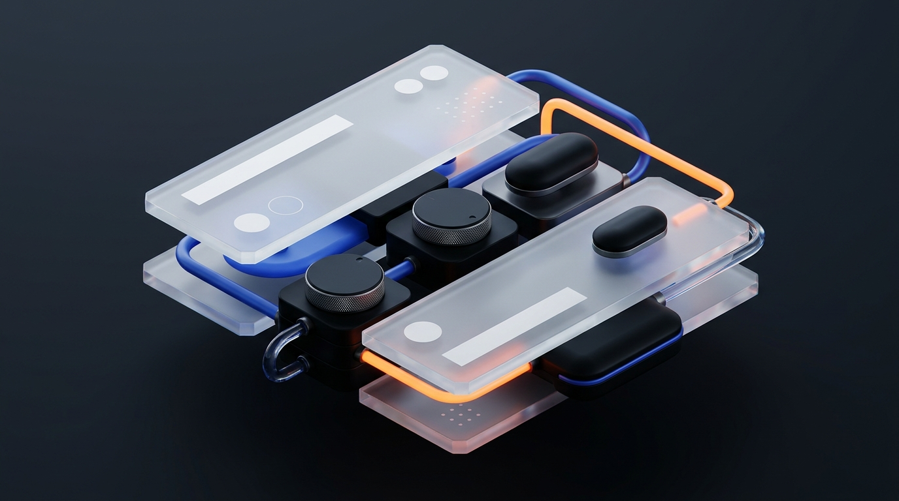

FULT‑ENGINE
Модульный серверный движок для SCP: Secret Laboratory на базе LabAPI.
Шестьдесят пять игровых и серверных модулей собраны в одну библиотеку
Fust-MODULE.dll.

- Состав сборки
- 65 модулей
- Платформа
- LabAPI 1.1.4
- Среда
- .NET Framework 4.8.1
- Защита релиза
- ConfuserEx2
Одна сборка вместо десятков плагинов
При запуске сервера класс FultEngine в LoaderModule сканирует сборку,
находит реализации IFultEngineModule, раскладывает YAML-конфиги по папкам и включает
модули по флагам активного режима.
Единая точка входа в LabAPI
Режим RP включается по умолчанию. Администратор может выключить все модули
командой fultmode off и вернуть их обратно командой fultmode rp
без перезапуска процесса. Почти каждый модуль наследует BaseModule<Config>
из API/EngineCompat.
Каталог модулей
Все 65 модулей актуальной сборки v2.0. Фильтруйте по категориям, ищите по командам или откройте любую карточку, чтобы скопировать путь к конфигу.
Топология кодовой базы
Настоящий граф связей FULT-ENGINE, построенный через graphify: 384 файла C#, 9 345 узлов, 21 529 зависимостей и 449 сообществ.

Веб-панель администрации
Внутри _WebPanel/ работает отдельное приложение на Node.js (Express, EJS,
better-sqlite3) с входом через Steam (passport-steam). Панель хранит
состав админов, роли и варны.
Роли синхронизируются автоматически из config_remoteadmin.txt или по HTTP напрямую от плагина.
cd _WebPanel
npm install
cp .env.example .env
npm run init-db
npm startУстановка на сервер
-
01
Скачайте релизную DLL
Положите обфусцированный файл
Fust-MODULE.dllиз релизаv2.0в папкуLabAPI/plugins/global/. -
02
Установите зависимости
Для работы движка нужны LabAPI
1.1.4,ProjectMER,HintServiceMeow,AudioPlayerApiиHarmony. -
03
Запустите сервер
Движок сам создаст каталог
LabAPI/configs/global/FULT-ENGINE/, разложит конфигиModuleConfig/*.ymlи включит режимRP.
Готовая сборка и пакеты
Актуальный релиз собран из коммита f02ae45 и доступен сразу в двух форматах:
прямым файлом в GitHub Releases и как NuGet-пакет в GitHub Packages.
dotnet add package FultEngine --version 2.0.0 \
--source https://nuget.pkg.github.com/pufikewsd/index.json